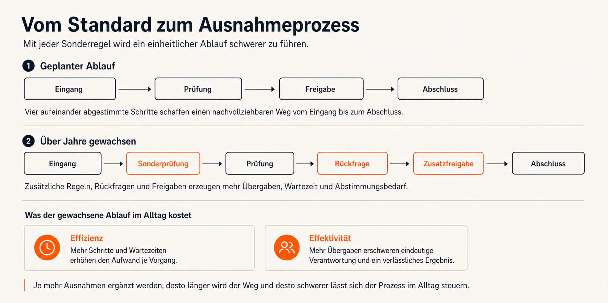
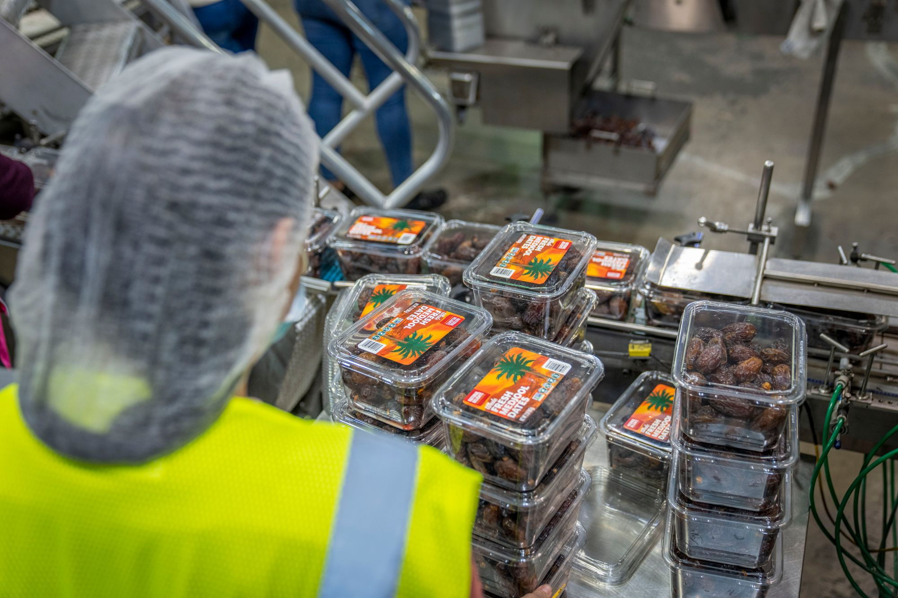

Analyse und Umsetzung aus einer Hand
Passend, wenn mehrere Prozesse oder Systeme betroffen sind, interne Kapazität fehlt und ein erfahrenes Team die Umsetzung zeitweise mitverantworten soll.
Wir finden Engpässe, vereinfachen Abläufe und führen die Verbesserungen gemeinsam mit Ihrem Team ein — von der ersten Bestandsaufnahme bis zum stabilen Tagesbetrieb.
Typische Ursachen sind fehlende Daten, neue Abläufe, die niemand erprobt, und unklare Zuständigkeiten im Tagesgeschäft.

Mitarbeitende kennen den Ablauf aus Erfahrung, doch eine gemeinsame Beschreibung fehlt. Dadurch ist schwer zu erkennen, wo Zeit verloren geht oder Fehler entstehen.
Ein Konzept wird vorgestellt, aber nicht im Alltag erprobt. Ohne klare nächste Schritte, Zeit und Verantwortung ändert sich an der täglichen Arbeit nichts.
Wer täglich mit dem Prozess arbeitet, kennt seine Schwachstellen. Wird dieses Wissen nicht früh genutzt, passt der neue Ablauf oft nicht zur tatsächlichen Arbeit.
Zahlen helfen nur, wenn jemand sie regelmäßig prüft und bei Abweichungen entscheidet. Deshalb verbinden wir jede Kennzahl mit einer zuständigen Person und einem festen Prüftermin.
Sie reichen von der Analyse und Neugestaltung über Automatisierung und Umsetzungssteuerung bis zur Einarbeitung des internen Teams.

Wir erfassen den heutigen Ablauf und werten vorhandene Daten aus. Wenn es sinnvoll ist, nutzen wir dafür auch Process Mining, also die softwaregestützte Auswertung von Prozessdaten. So werden Engpässe, Wartezeiten und unnötige Schleifen sichtbar. Sie erhalten eine verständliche Übersicht mit konkreten Möglichkeiten und nächsten Schritten.
Wir vergleichen den heutigen Ablauf mit dem gewünschten Zustand. Dabei prüfen wir doppelte Arbeit, getrennte Datenbestände und Sicherheitslücken. Den künftigen Prozess beschreiben wir so, dass Fachbereich und IT ihn gemeinsam verstehen und umsetzen können.
Wiederkehrende, fest geregelte Schritte können Software oder KI übernehmen. Beurteilung und Freigabe bleiben bei den zuständigen Menschen.
Wir begleiten die Umsetzung, übernehmen bei Bedarf zeitweise Verantwortung und arbeiten das interne Team ein. Das Mandat endet erst, wenn der Ablauf im täglichen Betrieb funktioniert.
Wenige aussagekräftige Kennzahlen, eindeutige Zuständigkeiten und feste Prüftermine sorgen dafür, dass aus jeder Abweichung eine konkrete Maßnahme wird.
Die Mitarbeitenden gestalten den neuen Ablauf mit und werden befähigt, ihn zu tragen — so wird er gelebte Praxis.
Jede Phase liefert ein nutzbares Ergebnis. Danach entscheiden Sie, ob und wie es weitergeht.
Prozesslandkarte, betroffene Systeme, vorhandene Kennzahlen, Beteiligte. Ergebnis: ein kompaktes Lagebild mit den Prozessen, die den größten Hebel haben.
Datenbasierte Untersuchung der Kernprozesse: wo die Engpässe liegen, wie groß sie sind und was ihre Behebung bringt.
Fachbereich und IT legen gemeinsam fest, wie der künftige Ablauf aussieht, wer verantwortlich ist und in welcher Reihenfolge er umgesetzt wird.
Der verbesserte Ablauf wird zuerst im kleinen Rahmen erprobt und gemeinsam geprüft. Danach wird er Schritt für Schritt auf weitere Bereiche ausgeweitet.
Verantwortlichkeiten und Kennzahlen sind festgelegt. Das Team kann eigenständig weiterarbeiten; auf Wunsch bleiben wir für die nächste Verbesserungsrunde ansprechbar.
Ein Beispiel zeigt, wie wir Engpässe in einem Ablauf erkennen. Der Zeitplan darunter ordnet die fünf Projektphasen von der ersten Bestandsaufnahme bis zur Übergabe.
Alle Werte nutzen dieselbe Einheit. So lässt sich sofort erkennen, an welchen Übergaben eine genauere Prüfung den größten Nutzen verspricht.
Der konkrete Zeitplan richtet sich nach Prozessumfang, Datenlage und Organisation. Nach dem Lagebild werden Dauer und Verantwortlichkeiten verbindlich geplant.
Entscheidend sind drei Fragen: Wie groß ist das Vorhaben? Wer kann intern Verantwortung übernehmen? Wird nur Fachwissen gebraucht oder auch Unterstützung bei der Umsetzung?
Passend, wenn mehrere Prozesse oder Systeme betroffen sind, interne Kapazität fehlt und ein erfahrenes Team die Umsetzung zeitweise mitverantworten soll.
Passend, wenn viele Teams gleichzeitig bereitgestellt und mehrere Länder oder Unternehmensteile koordiniert werden müssen.
Passend, wenn Fachwissen, Zeit und eine intern benannte Prozessverantwortung bereits dauerhaft verfügbar sind.
Passend, wenn eine einzelne fachliche Frage geklärt werden soll und keine zusätzliche Umsetzungskapazität benötigt wird.
Im Erstgespräch ordnen wir das Vorhaben offen ein. Wenn eine andere Form der Unterstützung besser passt, sagen wir das.
Der größte Hebel liegt meist in häufigen Standardabläufen, die heute durch manuelle Arbeit und Sonderwege aufgefangen werden.
Doppelte Eingaben vermeiden, Freigaben vereinfachen und wiederkehrende Schritte sinnvoll automatisieren.
Festlegen, wer wann übernimmt, welche Informationen benötigt werden und wie Mitarbeitende, Software und KI zusammenarbeiten.
Vom Vertragsabschluss bis zum ersten produktiven Einsatz einen klaren Ablauf über alle Kontaktwege schaffen.
Anliegen richtig zuordnen, häufige Fragen zügig beantworten und festlegen, wann ein Mensch übernehmen muss.
Vom Vertrag bis zum eingerichteten Arbeitsplatz Aufgaben und Termine für alle Beteiligten verbindlich festlegen.
Arbeitsschritte vereinheitlichen, Aufgaben parallel erledigen und Verantwortlichkeiten eindeutig zuordnen.
Wir prüfen nicht nur einzelne Arbeitsschritte, sondern auch Übergaben, Systeme, Entscheidungen und Auswirkungen auf Kunden und Mitarbeitende.
Wo Daten vorhanden sind, nutzen wir sie. Wo sie fehlen, arbeiten wir mit Interviews, Stichproben und Zeitmessungen.
Das Team erprobt die Veränderung im kleinen Rahmen. Erst wenn sie funktioniert, wird sie auf weitere Bereiche übertragen.
Wir arbeiten die zuständigen Personen ein und übergeben Modelle, Kennzahlen und Unterlagen so, dass das Team selbstständig weiterarbeiten kann.
Ein Ansatz, der den Wert aus Kundensicht maximiert und Verschwendung im Ablauf reduziert.
Eine Methode, die datenbasiert Streuung und Fehlerquoten in Prozessen senkt.
Ein Prinzip, das Prozesse in kleinen Schritten kontinuierlich verbessert.
Eine Notation, die Geschäftsprozesse standardisiert und lesbar modelliert.
Ein Ablauf in fünf Schritten: Ziel klären, messen, untersuchen, verbessern und die Wirkung sichern.
Ein Ansatz, der gezielt den Engpass erweitert, der das Tempo bestimmt.
Fachbereich, IT und Leitung arbeiten auf dasselbe Ziel hin. Gemeinsame Begriffe, benannte Verantwortliche und wenige Kennzahlen halten den Fortschritt sichtbar.
Ergebnis je Zyklus: messbar kürzere Durchlaufzeiten, weniger Fehler und ein stabil verankerter Prozess.
Wir modellieren Prozesse in einer Notation, die Fachbereich, IT und Leitung gleichermaßen lesen. So redet das ganze Projekt über denselben Ablauf, und in der Übersetzung geht nichts verloren.
Vor dem ersten Modell legen wir gemeinsam fest, woran wir Erfolg messen — partizipativ erarbeitet und von allen Beteiligten getragen. Dieses Zielbild bleibt der Maßstab, an dem jede Entscheidung im Projekt ausgerichtet wird.
Jeder Prozess und jede Kennzahl bekommt eine namentlich zuständige Person. Verantwortung liegt damit eindeutig — und bleibt auch nach der Übergabe in Ihrer Organisation verankert.
Wir halten den heutigen Aufwand fest und vereinbaren konkrete Ziele — zum Beispiel kürzere Bearbeitungszeiten, weniger Fehler oder weniger manuelle Nacharbeit. Ebenso wird benannt, wer die Kennzahlen prüft und bei Abweichungen entscheidet.
Zu Beginn erfassen wir Durchlaufzeit, Fehlerquote, Nacharbeit und manuellen Aufwand. Diese Werte bilden den Ausgangspunkt für die spätere Prüfung.
Für jede Messgröße werden ein Ziel, ein Prüftermin und eine zuständige Person festgelegt. Abweichungen führen damit zu einer konkreten Entscheidung.
Die Leitung muss das Ziel tragen und intern eine verantwortliche Person benennen. Fehlen Rückendeckung oder Verantwortung, nehmen wir das Mandat nicht an.
Ihr Team erhält den beschriebenen Soll-Prozess, die vereinbarten Kennzahlen, eindeutige Rollen und die nötigen Schulungsunterlagen.
Der erste Schritt ist ein Erstgespräch von 30–45 Minuten. Wir klären Ihre Ausgangslage, die wichtigsten Engpässe und ob CEx der richtige Partner ist. Wenn nicht, verweisen wir auf jemanden, der besser passt.
Erstgespräch anfragen →Die folgenden Fälle zeigen konkret, wie Daten, eine schrittweise Umsetzung und eindeutige Zuständigkeiten einen Prozess verändern.
Ein Ablauf kann im Gespräch einfach wirken und technisch trotzdem schwer zu automatisieren sein. Deshalb prüfen wir Prozessdaten, Datenqualität und jeden Schritt, der weiterhin menschliches Urteil braucht. So wird sichtbar, welche Vereinfachung realistisch ist.
Wir leiten den künftigen Prozess aus der tatsächlich gelebten Arbeit ab. Neue Anforderungen, gesetzliche Vorgaben oder Erkenntnisse aus dem Test können Änderungen notwendig machen. Deshalb wird der Ablauf nicht einmal beschlossen, sondern schrittweise verbessert.
Ein eingehendes Dokument wurde zunächst gescannt und digital gespeichert, anschließend für die manuelle Bearbeitung wieder ausgedruckt und danach erneut ins System übertragen. Die Bearbeitung selbst war sorgfältig, doch Medienbrüche und Wartezeiten erzeugten einen Rückstand von drei bis vier Monaten an Kundenanträgen.
Die Bearbeitung war schon vorher gut; verbessert wurde vor allem die Geschwindigkeit. Ein standardisiertes, maschinenlesbares Formular verkürzte die Durchlaufzeit. Die Mitarbeiterin blieb im Unternehmen und gewann mehr Zeit für persönliche Kundenanliegen — dort, wo ihre Erfahrung den größten Wert schafft.
Für ein stark genutztes Bestandssystem wurden Produkt- und Betriebsprozesse dokumentiert und in einen umsetzbaren künftigen Ablauf überführt. Ein Kernteam von rund zehn Personen arbeitete drei Monate daran. Preis und Teamgröße richten sich nach Umfang, Datenlage und der Verantwortung in der Umsetzung.
Automatisierung löst häufig Sorge um Arbeitsplätze aus. Unser Ziel ist, Zeit aus wiederkehrenden manuellen Schleifen freizugeben. Diese Zeit kann in Kundenservice, Vertrieb oder andere Aufgaben fließen, bei denen menschliche Erfahrung zählt. Das wird im Veränderungsprozess offen erklärt.
Prozessoptimierung bringt nur dann Wirkung, wenn der größte Engpass richtig erkannt wird. Wir prüfen mit Daten, wo Arbeit wartet, doppelt läuft oder durch Behelfe ersetzt wurde.
Wir suchen nach Wartezeiten, Schleifen, Freigaben, Medienbrüchen und manuellen Umwegen im gesamten Ablauf.
Wir nutzen Durchlaufzeiten, Mengen, Fehlerquoten und Systemdaten, damit Entscheidungen nicht auf Bauchgefühl beruhen.
Wir streichen unnötige Schritte, klären Zuständigkeiten und standardisieren den Normalfall.
Wir planen Umstellung, Verantwortliche und Messpunkte, damit das Modell im Alltag nicht liegen bleibt.
Johannes Reusch und Hans-Helmut "Hannes" Scheel führen CEx gemeinsam. Beide begleiten Mandate mit ihrem Team persönlich. Senior- und Executive-Erfahrung für Ihr Projekt von Anfang bis Ende.